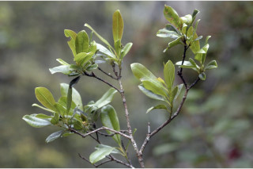
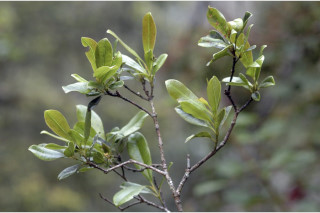
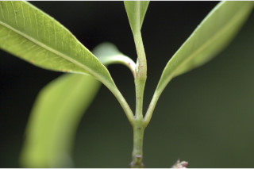
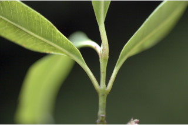
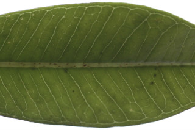
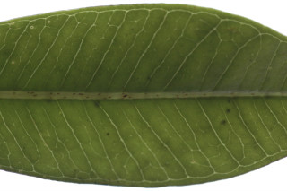

Trees up to 10 m tall.
10 ಮೀ. ಎತ್ತರದವರೆಗೆ ಬೆಳೆಯುವ ಮರಗಳು.
Trees up to 10 m tall.
மரங்கள் 10 மீ. உயரம் வரை வளரக்கூடியது.
Bark greyish-brown, smooth.
ತೊಗಟೆ ಬೂದು ಮಿಶ್ರಿತ ಕಂದು ಬಣ್ಣದಲ್ಲಿದ್ದು ನಯವಾಗಿರುತ್ತದೆ.
Bark greyish-brown, smooth.
மரத்தின் பட்டை சாம்பல்-ப்ரவுன் நிறமானது, வழவழப்பானது.
Branchlets terete, slender, glabrous.
ಕಿರುಕೊಂಬೆಗಳು ದುಂಡಾಗಿ,ತೆಳುವಾಗಿದ್ದು ರೋಮರಹಿತವಾಗಿರುತ್ತವೆ.
Branchlets terete, slender, glabrous.
சிறியநுனிக்கிளைகள் குறுக்குவெட்டுத் தோற்றத்தில் வளையமானது, மெல்லியது, உரோமங்களற்றது.
Leaves simple, opposite, decussate; petiole 0.6-1.2 cm long, canaliculate, glabrous; lamina 5-12.5 x 2.5-6 cm, obovate to rounded or obcordate, apex obtuse or retuse, base cuneate - attenuate, margin entire, glabrous, thinly coriaceous, pellucid gland dotted; midrib canaliculate above; intramarginal nerves present; secondary nerve 8-12 pairs, distant; tertiary_nerves broadly reticulate.
ಎಲೆಗಳು ಸರಳವಾಗಿದ್ದು ಅಭಿಮುಖವಾಗಿ ಜೋಡನೆಗೊಂಡಿದ್ದು ಕಾಂಡದ ಎರಡೂ ಕಡೆ ಎದುರು ಬದರಿನ ಲಂಬ ಸಾಲಿನಲ್ಲಿರುತ್ತವೆ;ತೊಟ್ಟುಗಳು 0.6-1.2 ಸೆಂ.ಮೀ. ಉದ್ದಹೊಂದಿದ್ದು ಕಾಲುವೆಗೆರೆ ಸಮೇತವಿರುತ್ತವೆ ಮತ್ತುರೋಮರಹಿತವಾಗಿರುತ್ತವೆ;ಪತ್ರಗಳು 5–12.5X2.5–6 ಸೆಂ.ಮೀ.ವರೆಗಿನ ಗಾತ್ರವಿದ್ದು ತಲೆಕೆಳಗಾದ ಅಂಡಾಕಾರದಿಂದ ಹಿಡಿದು ದುಂಡಾದ ಅಥವಾ ತಲೆಕೆಳಗಾದ ಹೃದಯದ ಆಕಾರ,ಚೂಪಾಲ್ಲದ ಅಥವಾ ದುಂಡಾದ ಅಗ್ರದಲ್ಲಿ ಕಚ್ಚುಳ್ಳ ತುದಿ, ಬೆಣೆ-ಒಳಬಾಗಿದ ಬುಡ,ನಯವಾದ ಅಂಚು ,ತೆಳುವಾದ ತೊಗಲನ್ನೋಲುವ ಮೇಲ್ಮೈ ಹೊದಿದ್ದು ಪ್ರಕಾಶ ಭೇಧ್ಯ ರಸಗ್ರಂಥಿ ಚುಕ್ಕೆಗಳ ಸಮೇತವಿದ್ದು ಕಾಗದವನ್ನೋಲುವ ಮೇಲ್ಮೈ ಹೊಂದಿದ್ದು;ಮಧ್ಯ ನಾಳ ಮೇಲ್ಭಾಗದಲ್ಲಿ ಕಾಲುವೆಗೆರೆ ಸಮೇತವಿರುತ್ತದೆ;ಅಂತರ ಅಂಚಿನ ನಾಳಗಳು ಇರುತ್ತವೆ;ಎರಡನೇ ದರ್ಜೆಯ ನಾಳಗಳು 8-12 ಜೋಡಿಗಳಿದ್ದು ಹೆಚ್ಚಿನ ಅಂತರದಲ್ಲಿರುತ್ತವೆ; ಮೂರನೇ ದರ್ಜೆಯ ನಾಳಗಳು ವಿಶಾಲ ಜಾಲ ಬಂಧ ನಾಳ ವಿನ್ಯಾಸದಲ್ಲಿರುತ್ತವೆ.
Leaves simple, opposite, decussate; petiole 0.6-1.2 cm long, canaliculate, glabrous; lamina 5-12.5 x 2.5-6 cm, obovate to rounded or obcordate, apex obtuse or retuse, base cuneate - attenuate, margin entire, glabrous, thinly coriaceous, pellucid gland dotted; midrib canaliculate above; intramarginal nerves present; secondary nerve 8-12 pairs, distant; tertiary_nerves broadly reticulate.
இலைகள் தனித்தவை, எதிரடுக்கமானவை, குறுக்குமறுக்கானவை; இலைக்காம்பு 0.6-1.2 செ.மீ. நீளமானது, இலைக்காம்பு குறுக்குவெட்டுத் தோற்றத்தில் கேனாலிகுலேட், உரோமங்களற்றது; இலை அலகு 5-12.5 X 2.5-6 செ.மீ., தலைகீழ் முட்டை வடிவானது முதல் வட்டமானது அல்லது தலைகீழ் இதய வடிவானது, அலகின் நுனி மெட்டையானது அல்லது சிறு பிளவுடையது (ரெட்யூஸ்), அலகின் தளம் ஆப்பு வடிவானது-அட்டனுவேட், அலகின் விளிம்பு முழுமையானது, உரோமங்களற்றது, மெல்லிய கோரியேசியஸ், ஒளிபுகும் சுரப்பி புள்ளிகளுடையது; மையநரம்பு மேற்புறத்தில் அலகின் பரப்பைவிட பள்ளமானது; விளிம்பு நரம்பு (இண்ட்ராமார்ஜினல் நரம்பு) கொண்டது; இரண்டாம் நிலை நரம்புகள்8-12 ஜோடிகள்; மூன்றாம் நிலை நரம்புகள் அகன்ற வலைப்பின்னல் போன்றவை.
Inflorescence cymes, axillary or from scars of fallen leaves; flowers white.
ಪುಷ್ಪಮಂಜರಿಗಳು ಅಕ್ಷಾಕಂಕುಳಿನಲ್ಲಿ ಅಥವಾ ಎಲೆಯುದುರು ಗುರುತಿನ ಮೇಲಿರುತ್ತವೆ;ಹೂಗಳು ಬಿಳಿ ಬಣ್ಣದವು.
Inflorescence cymes, axillary or from scars of fallen leaves; flowers white.
மஞ்சரி சைம் வகை, இலைக்கோணங்களில் காணப்படுபவை அல்லது இலைகளற்ற முதிர்ந்த கிளைகளில் தோன்றுபவை; மலர்கள் வெள்ளை நிறமானது.
Berry, globose, crowned with persistent calyx.
ಬೆರ್ರಿ ಫಲಗಳು ಗೋಳದ ಆಕಾರದಲ್ಲಿದ್ದು ಮುಕುಟದಲ್ಲಿ ಶಾಶ್ವತವಾಗಿ ಉಳಿಯುವ ಪುಷ್ಪಪಾತ್ರೆಯ ಸಮೇತವಿರುತ್ತವೆ.
Berry, globose, crowned with persistent calyx.
முழுச்சதைகனி (பெர்ரி), கோளவடிவானது, நிரந்தரமான புல்லி இதழ்களுடையவை.
 

 

 
